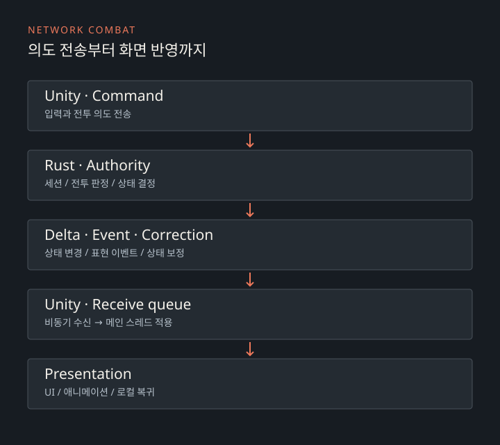

CASE 01 · COMBAT / NETWORK
프로젝트 X
Unity 클라이언트와 Rust 서버로 만든 전투 RPG입니다. 전투, AI, UI와 네트워크 연동을 다룹니다.
담당 작업
Unity의 전투·캐릭터 상태·UI·네트워크 코드와 Rust 서버를 개발했습니다. 캐릭터 모델과 맵 에셋 제작은 담당하지 않았습니다.
전투 계산과 상태 변경
AI, UI, 애니메이션에서 각각 전투 상태를 수정하면 같은 공격에도 적용 순서와 결과가 달라질 수 있습니다. 로컬에서는 Resolver가 판정 결과와 Mutation을 생성하고, 적용 계층이 실제 상태를 변경하도록 책임을 나눴습니다.
전투 진입과 종료도 명시적인 세션으로 관리합니다. 현재 타깃이 잠시 사라져도 적대 활동이 남아 있으면 전투 상태를 유지합니다.
서버가 판정하는 네트워크 전투

클라이언트는 전투 의도를 전송하고 서버가 최종 상태를 결정합니다. 비동기 수신 경로와 Unity 객체 접근을 분리해 수신 큐를 메인 스레드에서 소비합니다. 상태 변경, 표현 이벤트, 보정 메시지는 서로 다른 책임을 갖습니다.
연결이 끊겼을 때의 복귀
네트워크 전투에 들어가기 전 로컬 상태를 체크포인트로 저장합니다. 전투 도중 연결이 끊기면 이 시점으로 돌아옵니다.
정상적으로 전투를 마쳤다면 결과 ID를 확인하고 보상을 반영한 뒤 저장합니다. 결과 파일을 읽을 수 없거나 ID가 맞지 않으면 복귀 데이터를 남겨 다시 처리할 수 있게 했습니다.
접속 처리
로컬/LAN 환경을 대상으로 합니다. 접속 재시도 횟수와 요청 대기 시간을 제한하고, 전투 중 단절은 세션 재개 대신 체크포인트 복귀로 처리합니다.